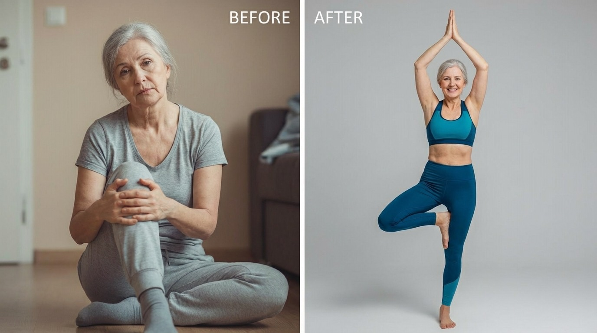
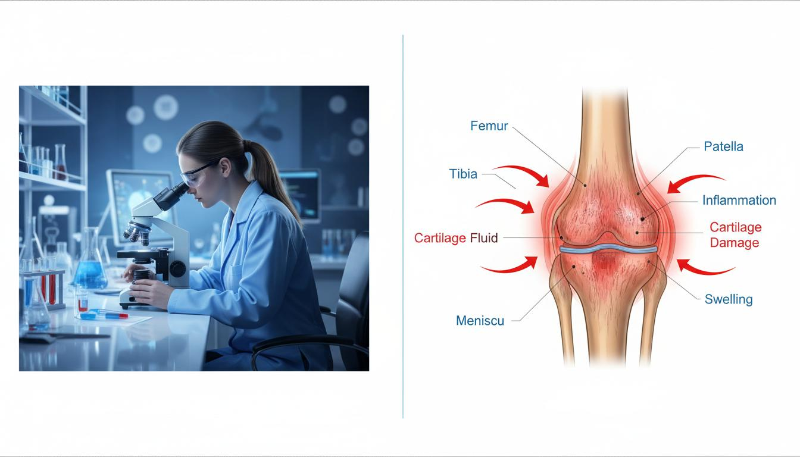

Me on my daughter's 25th birthday trip—something I never thought I'd be able to do again.
There was a specific morning, about three years ago, when I sat on the edge of my bed and just cried.
I wasn't crying because the pain in my hips was unbearable. I had actually grown used to the deep, grinding ache that greeted me every single morning.
I was crying because my husband had just quietly canceled our weekend hiking trip. He didn't even consult me. He just knew I couldn't handle the walking, and he wanted to save me the embarrassment of saying no.
I felt so old. So incredibly old. At 54, I felt like a prisoner in a body that had suddenly decided to betray me.
You see, the decline wasn't sudden. It was a slow, agonizing fade.
First, I stopped running and switched to walking. Then, the walks got shorter. Then, I stopped taking the stairs. Eventually, just standing at the kitchen counter to chop vegetables became a miserable chore.
Like any reasonable person, I went to my doctor. He looked at my chart, patted my arm condescendingly, and said, "Veronica, this is just what happens when we get older. Take some ibuprofen, try some glucosamine, and rest."
I was furious. Was this really the rest of my life? Managing decline?
The "Supplement Carousel"
I refused to accept that answer. So, I became my own advocate.
I bought every joint supplement under the sun. My kitchen cabinet looked like a pharmacy. Collagen powders. Turmeric gummies. Huge, horse-pill sized glucosamine and chondroitin capsules.
I spent hundreds of dollars every month. I stayed consistent. I took them every morning with my coffee.
And six months later? Nothing had changed. My knees still popped loud enough to echo in the hallway. My hips still throbbed when the weather changed.
I felt entirely hopeless.
A Quiet Conversation That Changed Everything
The turning point came from the most unlikely place: my sister-in-law, Diane.
Diane is 61. She plays tennis three times a week. I always assumed she just had "good genes."
Over coffee one afternoon, I finally broke down and confessed how bad my joints were getting. Diane practically dragged me into her kitchen, opened her cupboard, and pulled out a small, unassuming bottle.
"Veronica," she said, looking me dead in the eye. "Forget the glucosamine. It doesn't absorb. Your cells are inflamed, and you are literally just creating expensive urine."
She handed me a bottle of something called Zanthin.
She explained that when our hormones change in our late 40s and 50s, the cells that protect our joints lose their defense mechanisms. They get flooded with chronic inflammation. At that point, no amount of collagen will help because the cells are too inflamed to absorb it.
Zanthin contained a highly concentrated, pure strain of a natural compound called Astaxanthin, grown from specific microalgae. Unlike other supplements, its molecular structure is small enough to pierce the cell wall and flush the inflammation out from the inside.
Finding the Lost Pieces of Myself
I ordered my own supply that night. The company had a Lifetime Empty Bottle Guarantee, so I figured I had zero financial risk.
I didn't experience a miracle on day one. But around the beginning of week three, something beautiful happened.
I woke up, threw my legs over the side of the bed, and stood up. It took me three steps toward the bathroom to realize I hadn't braced myself.
My knees didn't scream. The heavy, grinding pressure in my hips was gone. It felt like someone had quietly gone in and greased all my joints while I was sleeping.

Fast forward to today. I am back to hiking with my husband. We actually just booked a trip to the Redwoods for our anniversary. I can sit on the floor and play with my granddaughter without needing my husband to pull me back up.
I didn't just get my joints back. I got my dignity back. I got my freedom back.
I'm writing this because I know there is someone out there reading this who is sitting on the edge of their bed right now, feeling exactly the way I did.
You are not trapped. You don't have to just accept the decline. Sometimes, you just need the right tool to let your body heal itself.
The company that makes Zanthin is currently offering it directly to readers for $31.99—a fraction of what I used to spend on useless pills.
If you take one piece of advice from a woman who has been exactly where you are: just try it. You have nothing to lose but the pain that is holding you back.